Using GIS to Enhanace The Lives of Citizens
@MapNight
Shad Campbell
@shadcampbell
Melinda Campbell
History
- Started "GIS" in 1990 - 1 Engineering Assistance
- Within 5 years - 6 GIS Specialists
- 25 years later - 11 GIS Professionals in 6 departments
-
Original Deschutes County GIS Logo
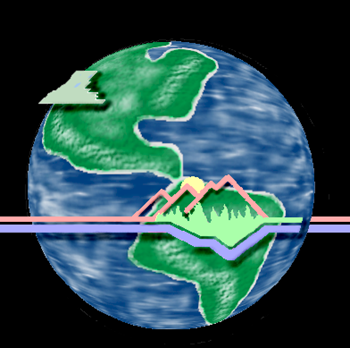
911
Citizen Emergency Notification System
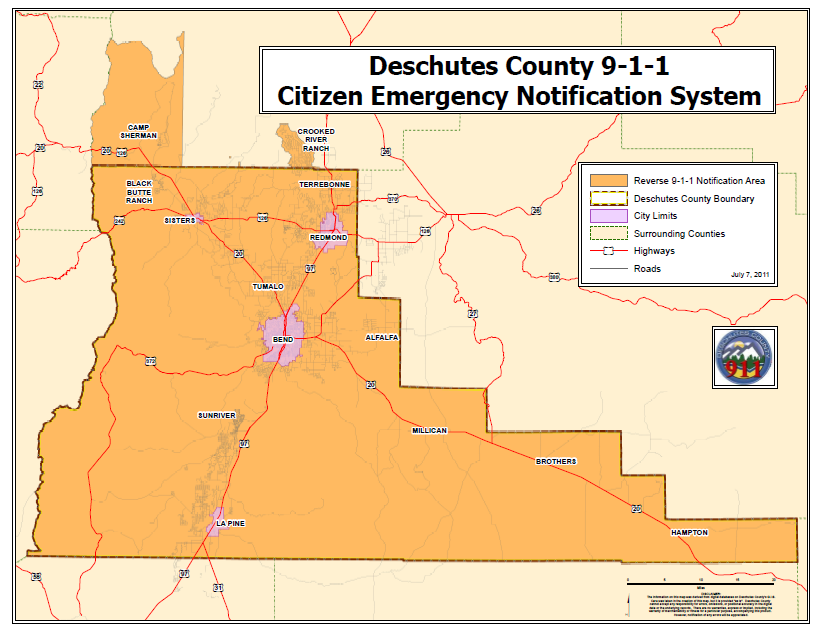 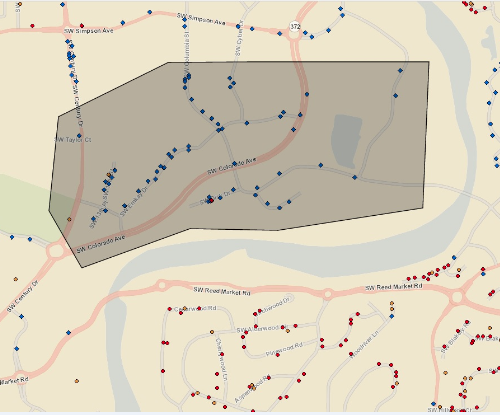
Back
Community Development
Citizen Land Use Outreach
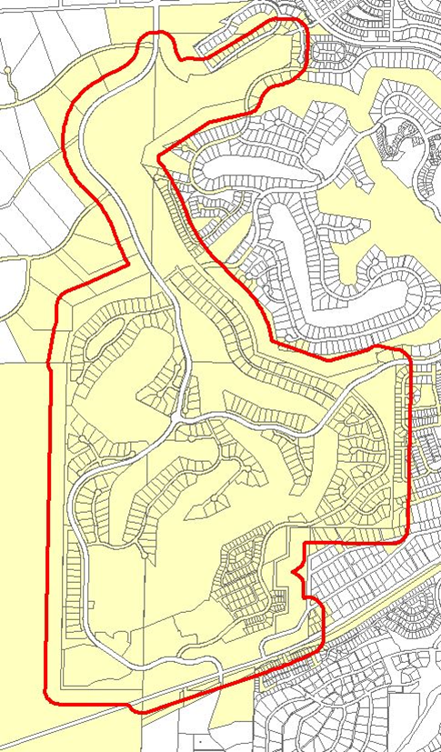 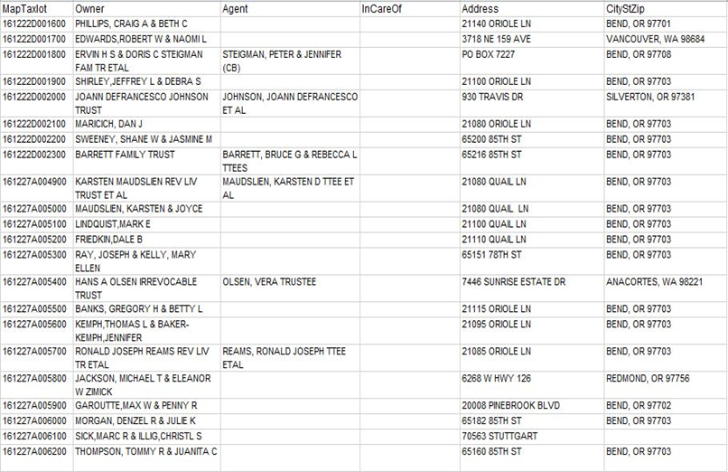
Next
Community Development
Preserve and Protect Historic Places
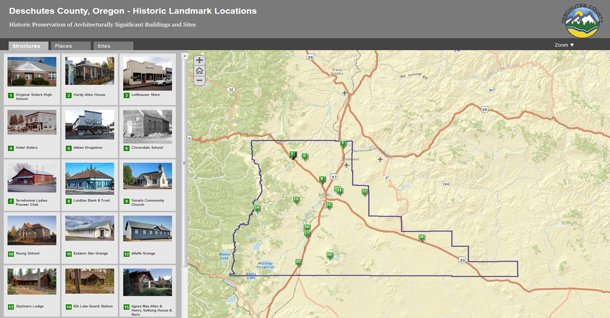
Back
Road Department
Managing Snow/Ice For Safer Roads
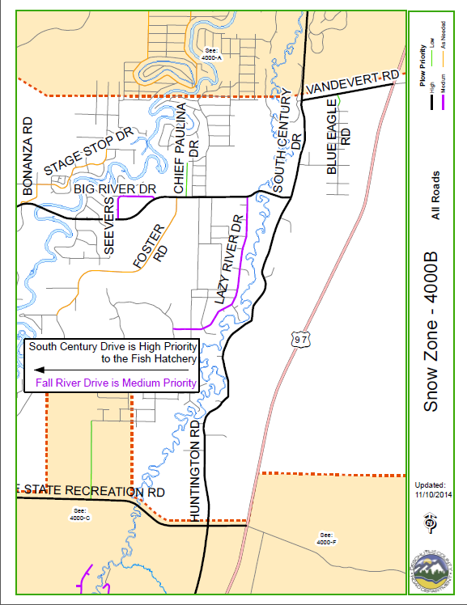
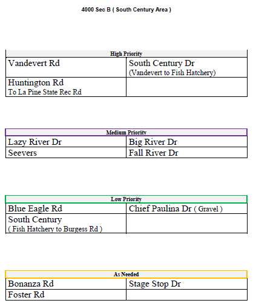
Back
Clerk's Office
Assuring the Correct Ballot for Voters
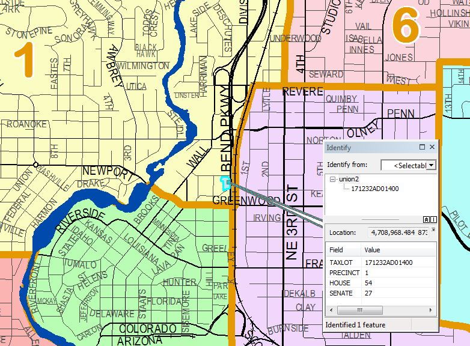
Back
SAR/Emergency Services
WildFire Evacuation Areas
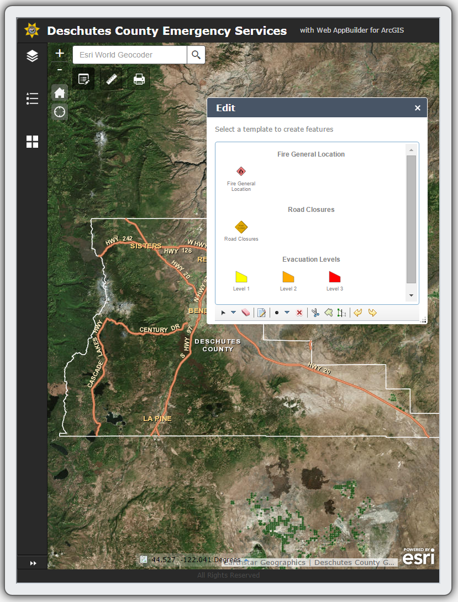
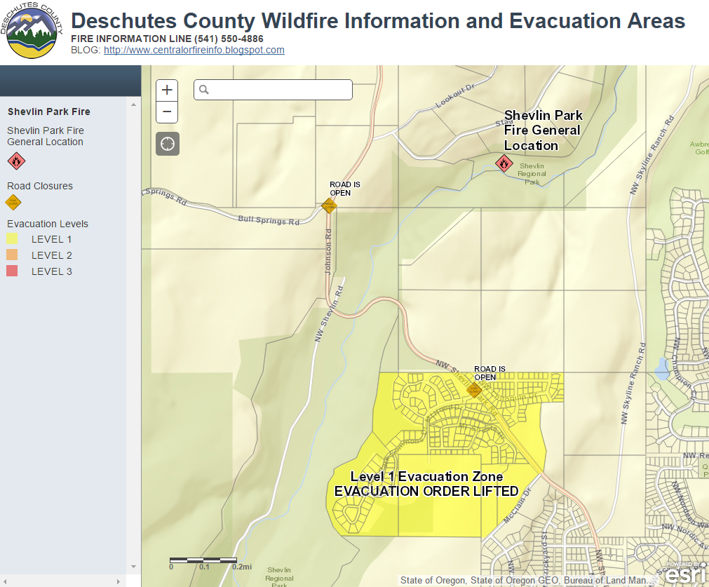
Back
Forester
WildFire Danger Areas and Mitigation
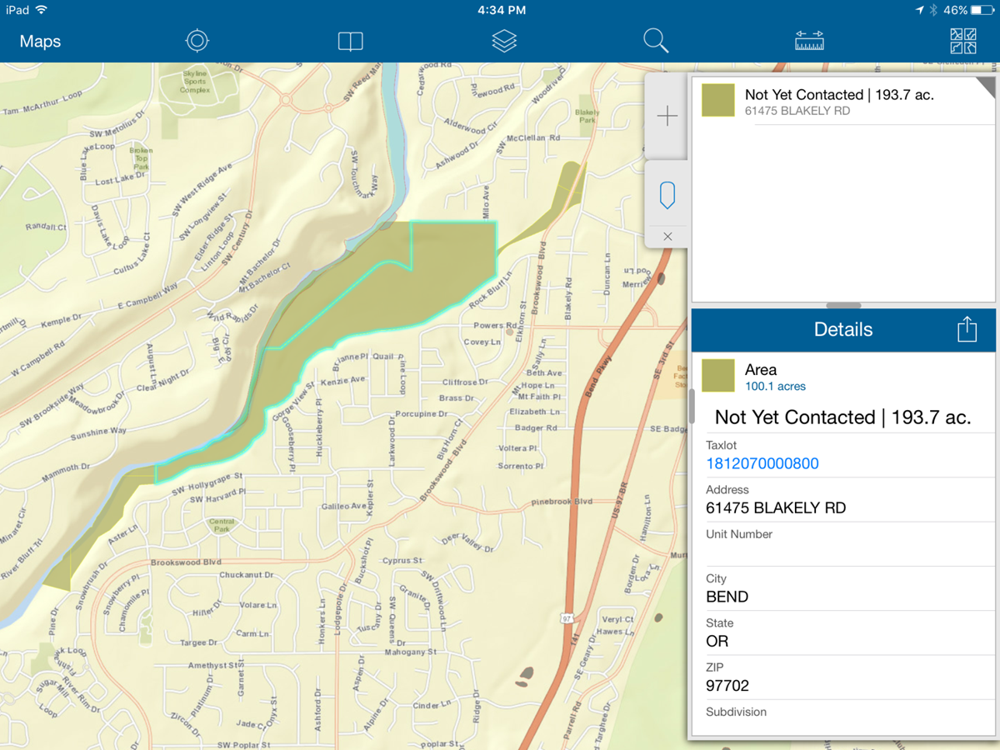
Back
Assessor
Locating Buildings and Services
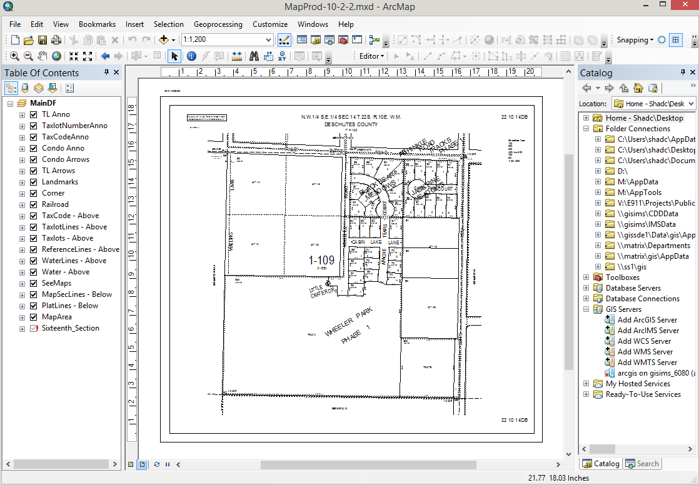
Back
Information Technology
Locating Buildings and Services
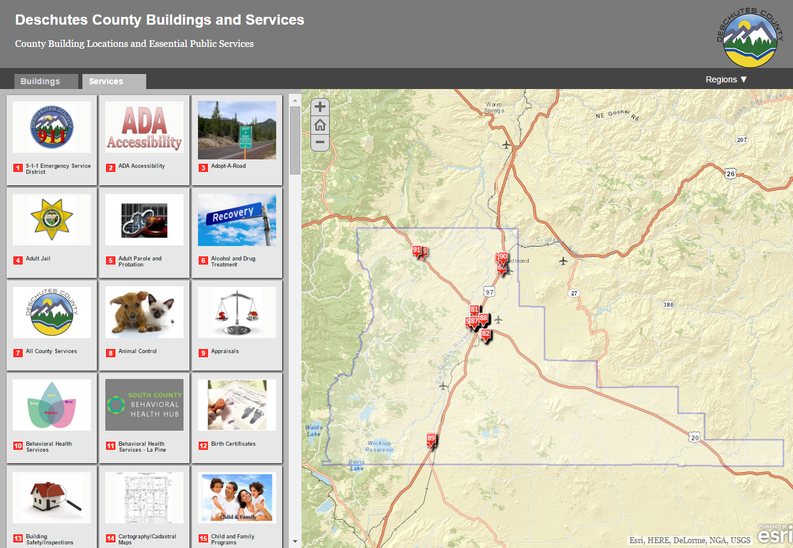
Next
Information Technology
Property Information System - Dial
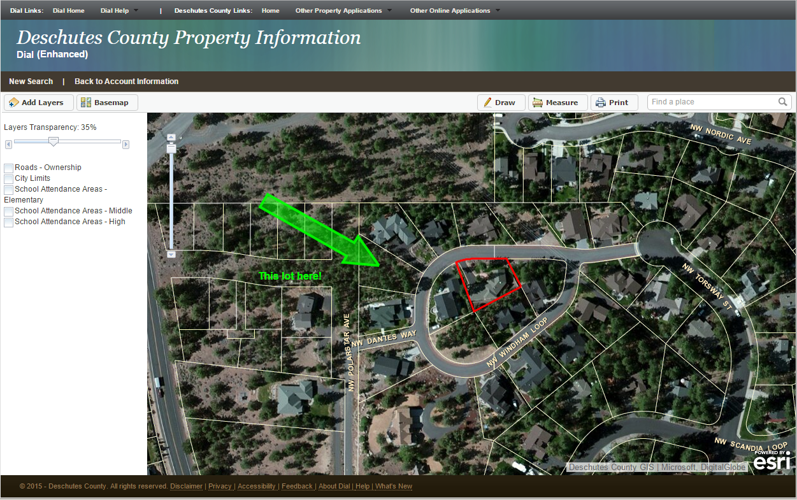
Back
We eat our own dog food!!
We create data and applications
We use them internally (and externally)
And... we provide free access to our data.
... Did you say FREE DATA!
Yes I did!!
GIS data for download
ESRI ArcGIS REST API
Dial API
Python script samples for automated downloads
http://data.deschutes.org